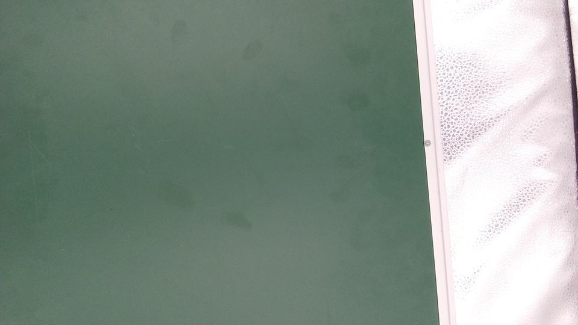
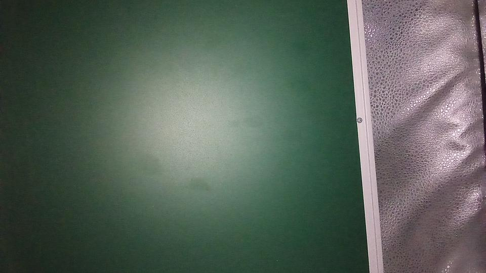
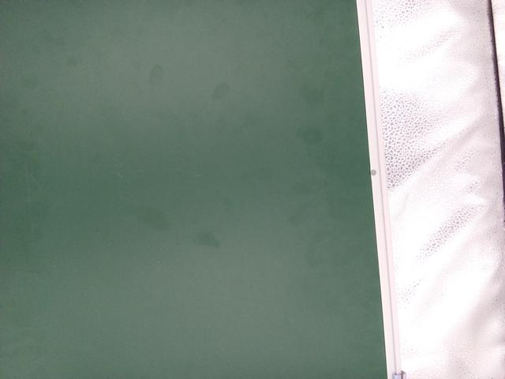
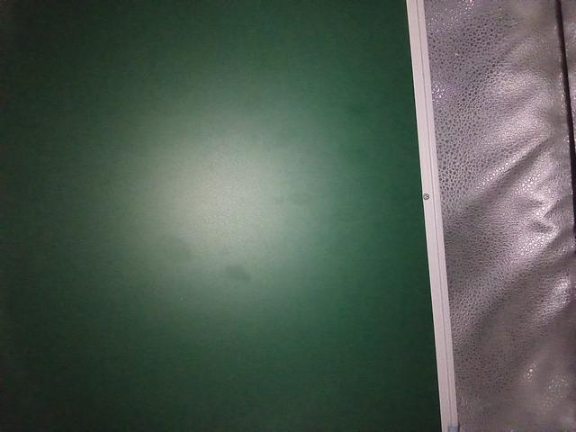
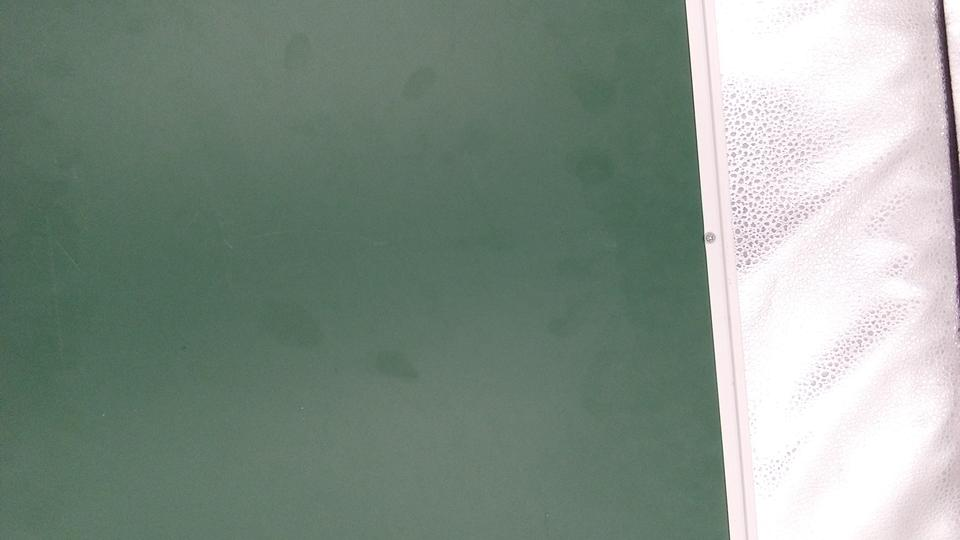
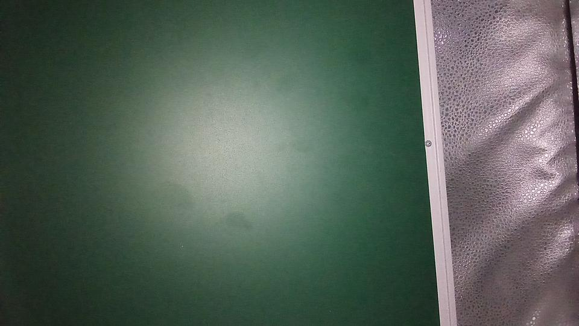

test_led_snapshot.py
测试项描述
预检查项
Android 14 以下（API LEVEL 小于 34）的设备不参与测试。
不支持闪光灯（
android.flash.info.available!= 1）的设备不参与测试。scene_flash 测试需要在传感器融合盒的黑暗场景中进行。
测试内容与目标
用于测试 LED 快照是否会使图像饱和或产生色偏。
此测试在传感器融合盒中添加了一个照明控制器来控制灯光。
将灯光设置为 OFF 后，测试将 AUTO_FLASH 模式设置为 ON 进行拍摄。
在此拍摄期间，该测试会在 aePrecapture 触发器设置为 START 的情况下运行预拍摄序列，并将拍摄 intent 设置为 Preview 以使用闪光灯进行拍摄。
由于拍摄图像有一个明显的热点，因此该测试会计算整个拍摄的闪光图像平均值，并验证该值是否在 (50, 200) 范围内。 为了检查图像是否达到合理的白平衡，该测试会计算 R/G 和 B/G 比率，并验证这些比率是否在 0.8 和 1.2 范围内。
在此测试中， LED 快照拍照成片过暗、过亮或产生异常色调都会被认定为 FAIL。
针对 JPEG 和 YUV 格式，以 4:3(640, 480)、16:9(640, 360) 比例最大尺寸分别拍摄 3 张照片：
1、开启黑箱光源，
AUTO_FLASH设为OFF：以无打闪的照片作为基准； 2、关闭黑箱光源，AUTO_FLASH设为OFF：确保当前光线环境足够暗以触发闪光灯； 3、关闭黑箱光源，AUTO_FLASH设为ON：拍摄打闪照片，并转为 RGB 格式用于后续检查计算。
要求相机必须支持 JPEG 格式的 VGA(640, 480) 输出。
针对每一组的三张图片，计算图像的平均亮度值并记录。
对于触发闪光灯拍摄的样本，要求其平均亮度需处于预设的最小与最大阈值范围内。 闪光灯捕获的图像应避免过暗或过亮的情况。
对于白平衡，要求红绿比（R/G）和蓝绿比（B/G）均处于预先设定的阈值范围。
若任何一项测量值超出允许范围，系统将上报对应故障。
获取打闪拍照 Result 的 expTime、ISO、aeState、flashState；
检查要求 flashState 值必须为 FLASH_STATE_FIRED。
计算打闪照片 RGB 图像各色彩通道的平均值，检查要求 R/G 和 B/G 比率均在 [0.8, 1.2] 范围内，以及各通道平均值应在 [50, 200] 范围内。
测试的 API：
通过条件： R/G 和 B/G 比率在 [0.8, 1.2] 范围内。 闪光图像平均值在 [50, 200] 范围内。
[孙海鑫 记录于 2025.05.12]
历史问题
项目 |
KM5 |
解决者 |
sunhaixin |
备注 |
KM5NOS1510-481 孙海鑫 记录于 2025.05.12 |
异常描述 |
该测试项对测试环境要求比较严苛 |
异常原因 |
灯箱内自测： 单测 全测 |
解决方案 |
GMS 组都是用的黑箱进行测试，容易通过。 自测这个灯箱不容易 PASS 估计是受内部反光和光源方向的影响 |
更多信息 |
测试 PASS 结果图：       各格式/尺寸的测试数据： jpeg_320x240: R/G ratio: 0.87803 B/G ratio: 0.89581 rgb means: [76.32350, 86.92548, 77.86848]
jpeg_960x540: R/G ratio: 0.89063 B/G ratio: 0.90223 rgb means: [87.70203, 98.47201, 88.84488]
yuv_640x480: R/G ratio: 0.87277 B/G ratio: 0.89206 rgb means: [78.92670, 90.43266, 80.67124]
yuv_960x540: R/G ratio: 0.87805 B/G ratio: 0.90038 rgb means: [86.24761, 98.22608, 88.44036]
|


项目 |
GH67J2 |
解决者 |
sunhaixin |
备注 |
368718 孙海鑫 记录于 2025.11.03 |
异常描述 |
error_util.CameraItsError: Problem with socket on device side
该测试项对测试环境要求比较严苛 |
异常原因 |
疑似测试环境和手法问题，本应关闭光源的，未关闭外部光源。 测试需要在传感器融合盒的黑暗场景中进行。 |
解决方案 |
需要 黑箱测试，且 背景 需要 颜色均匀； 无专用测试盒时，需要 手动控制灯光。 |
更多信息 |
测试 PASS 结果图（共有 jpeg 320x240、640x360、yuv 192x108、640x480，此处展示 jpeg_640x360、yuv_192x108）： 各格式/尺寸的测试数据： jpeg_320x240: R/G ratio: 0.93718 B/G ratio: 0.99134 rgb means: [54.46451, 58.11527, 58.11527]
jpeg_640x360: R/G ratio: 0.94550 B/G ratio: 0.99769 rgb means: [57.59374, 60.91365, 60.77298]
yuv_640x480: R/G ratio: 0.96047 B/G ratio: 0.98797 rgb means: [51.61676, 53.74099, 53.09453]
yuv_192x108: R/G ratio: 0.94651 B/G ratio: 0.99191 rgb means: [57.06597, 60.29109, 59.80305]
|